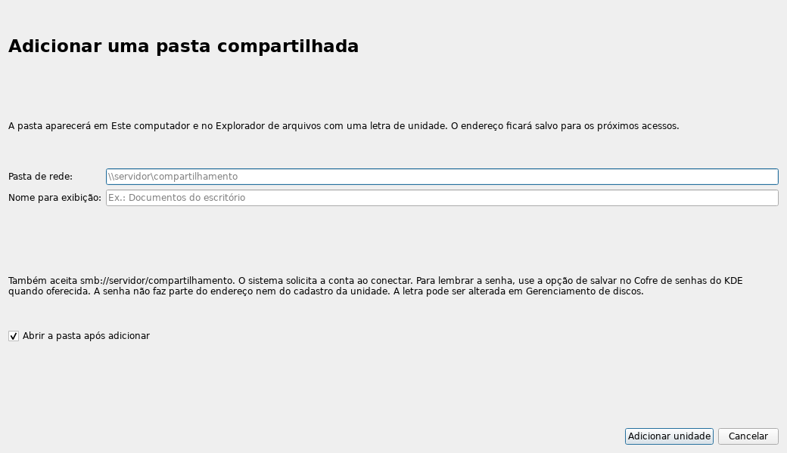

No Explorador, abra Locais de rede ou informe o endereço do compartilhamento na barra de endereços. Use Mapear unidade de rede no Iniciar para guardar o acesso. Para impressoras, procure a configuração de impressão na Central do Sistema.
